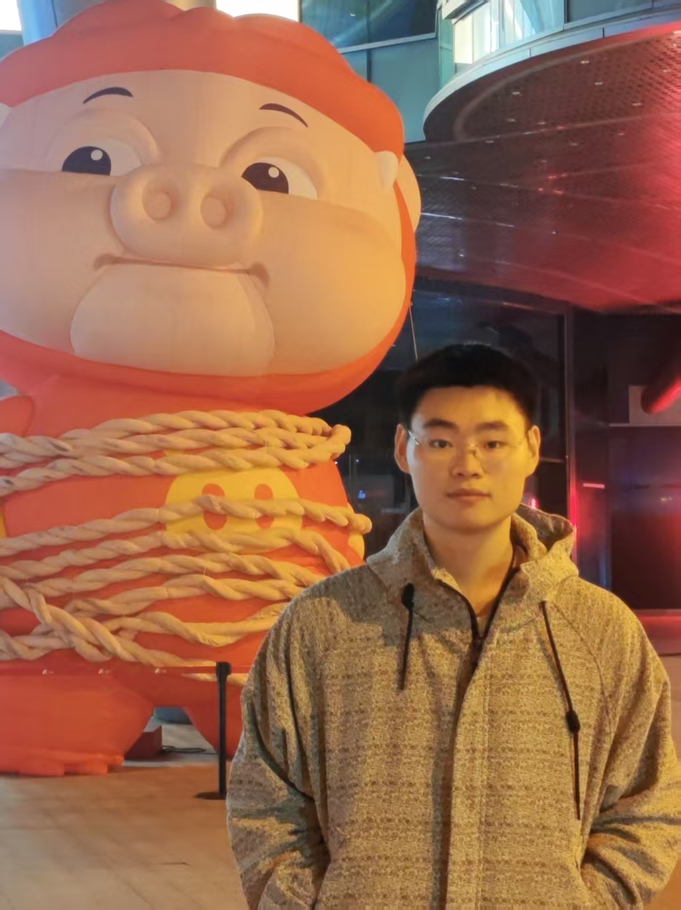
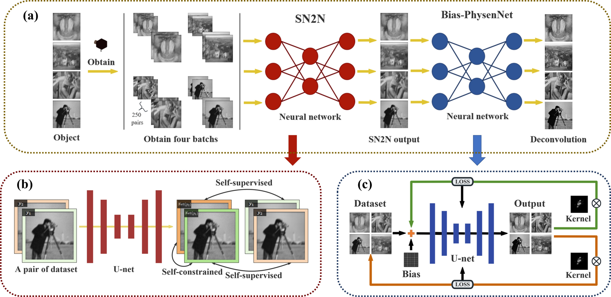
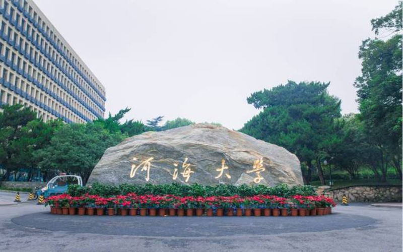

01
Diffractive imaging & camera-specific learning
Lightweight reconstruction back ends tailored to individual optical systems, supported by PSF-aware simulation and instance-specific experimental design.
Computational Imaging · PhD Applicant
Building imaging systems where optics, physics, and learning are designed together.
I am an M.S. candidate in Mathematics at Central South University. My research spans diffractive imaging, physics-guided inverse problems, uncertainty-aware reconstruction, and lightweight camera-specific learning systems.
Research directionHardware–algorithm co-design

I am interested in end-to-end imaging research that treats sensing hardware, physical models, data, and reconstruction algorithms as one coupled system.
Lightweight reconstruction back ends tailored to individual optical systems, supported by PSF-aware simulation and instance-specific experimental design.
Self-supervised and test-time adaptation methods that embed forward models into training, turning physical consistency into useful supervision.
Predictive uncertainty as a tool for adaptive reconstruction, principled model pruning, optical–algorithm design, and reliable real-world deployment.
My recent projects connect physical image formation with efficient, adaptive, and uncertainty-aware learning.

A self-supervised framework for inverse problems under biased, complex low-light noise. The method jointly optimizes the clean image and noise expectation while using the point spread function as a natural physical constraint.
First author · Major revision at IEEE Transactions on Computational Imaging · 2025–2026
A camera-aware pipeline combining coordinate-dependent PSFs, ISO and RGB ISP simulation, uncertainty-guided structured pruning, and physics-consistent test-time training. The system targets practical high-resolution reconstruction for real cameras.
First author · Manuscript in preparation, targeting IEEE TPAMI · 2026
A plug-and-play approach that uses per-pixel predictive uncertainty from a Bayesian neural network to adapt loss and regularization weights during physics-consistent test-time reconstruction.
Corresponding author · Proposed the idea and mentored experiments and implementation · In preparation for ICLR 2027
My broader work has strengthened the tools I bring to computational imaging: small-sample modeling, experimental design, uncertainty quantification, and production-oriented deep learning.
Key Member · with Assoc. Prof. Liang Yan
Developed high-precision surrogate models and experimental designs for wind-tunnel, engine, and in-flight starting tests under small-sample conditions, achieving below-5% MAPE and over-90% design efficiency.
Key Member · with Assoc. Prof. Hongqiao Wang
Built Gaussian-process surrogate models for detonation and cylinder-test problems, using uncertainty quantification for inverse parameter calibration and improving performance by 50% over traditional methods.
Research Intern · with Prof. Yinyin Zang
Developed data pipelines, multi-task dialogue classification, and reinforcement learning-based reward design to improve empathetic understanding and response quality in large language models.
 2024 – present
2024 – present
M.S. in Mathematics · GPA 3.61 / 4.00
Advisor: Assoc. Prof. Hongqiao Wang · Changsha, China

2020 – 2024B.S. in Information and Computing Science · GPA 4.29 / 5.00
Overall score: 85.64 / 100 · Nanjing, China
Deblurring, denoising, deconvolution, ISP simulation, point spread functions, and end-to-end imaging pipelines.
Self-supervised learning, test-time training, network pruning, Bayesian neural networks, Gaussian processes, and few-shot surrogate modeling.
Bayesian optimization, active learning, optimal experimental design, Python, PyTorch, TensorFlow, scikit-learn, and MATLAB.
I would be glad to discuss research at the intersection of optical systems, inverse problems, efficient learning, and uncertainty-aware hardware–algorithm co-design.